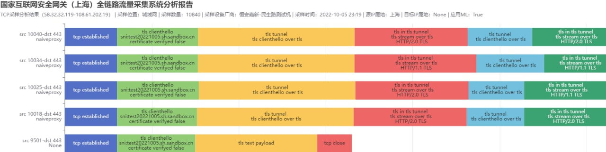

2022年10月GFW现状
20大开始前，GFW突然升级，封禁了很多基于TLS的代理，很多人稳定运行了几年的代理都被封了。
这次估计是根据TLS的ClientHello和各种连接的来回次数分析在TLS中运行了什么协议。
大家都知道，一般的V2ray WebSocket的代理（Vmess/VLESS + ws + tls）需要和服务器进行3.5次来回才能连接成功。这个来回通讯的过程即使被加密了，也可以通过检测长度，时间等手段检测出来。
虽然不知道是不是真的，但是我在网上找到了这张图片，GFW正在通过试图通过分析建立连接的过程判断用户是否是在使用代理
除了是否在使用代理之外，GFW还可以分析出是什么代理

以及代理中是哪个网站的流量
建议对策：使用两层代理。